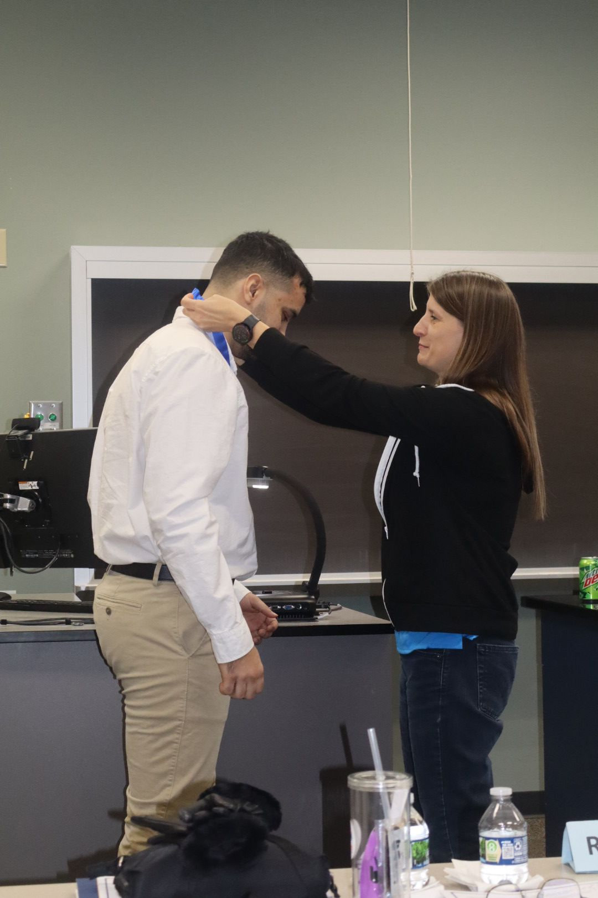
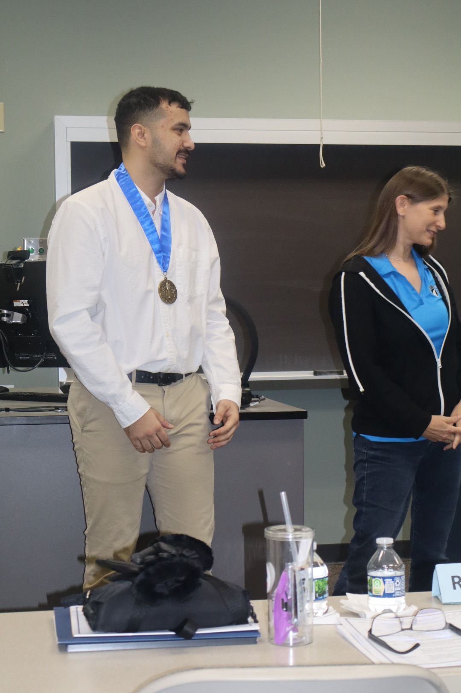

Sip Success Online: Part II
In Part II of my honors project, I focused on analyzing how the Sip Success Online website affected customer engagement and sales through digital metrics. This phase was all about measuring the real-world business impact of accessible web design.
I used tools like Google Maps, Facebook, and Instagram to monitor traffic, user interaction, and visibility. Data collection involved comparing sales and engagement metrics before and after the website launch.
I implemented marketing strategies and adapted content based on what the data showed—refining my skills in data-driven decision-making and digital outreach.
At the end of this project, I compiled a full report that clearly demonstrated how web accessibility and visibility contribute to small business success.
This project received an A Grade and, along with Part I, led to earning the Honors Medallion—the highest academic distinction in the program.